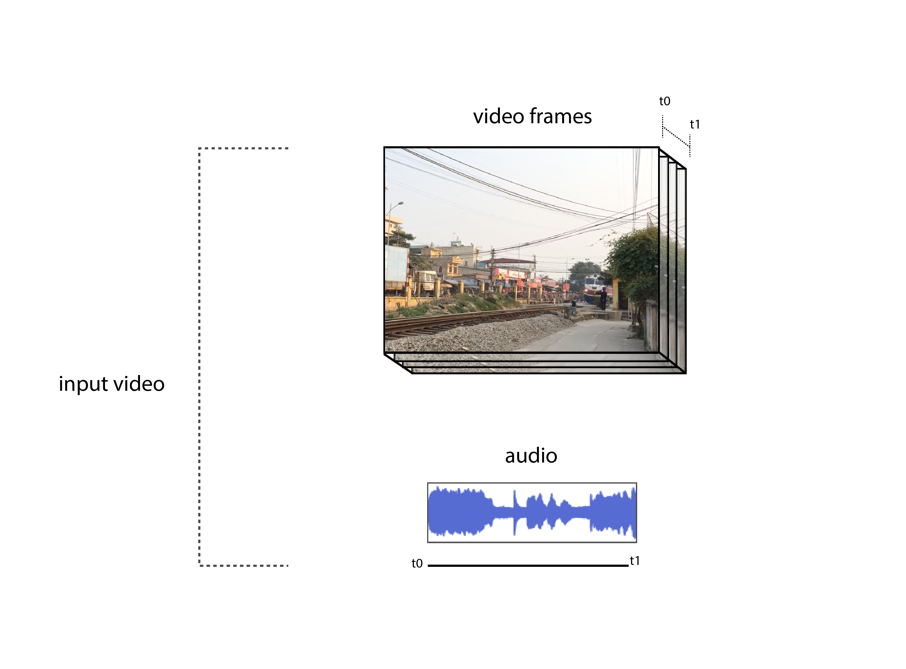

Audio-Visual Scene Analysis with Self-Supervised Multisensory Features
Multimodal Learning
By Elina Oikonomaki
Our experience of the world is multimodal — we see objects, hear sounds, feel the texture, smell odors, and taste flavors. Modality refers to the way in which something happens or is experienced and a research problem is characterized as multimodal when it includes multiple such modalities. In order for Artificial Intelligence to make progress in understanding the world around us, it needs to be able to interpret such multimodal signals together. For example, images are usually associated with tags and text explanations; texts contain images to more clearly express the main idea of the article. Different modalities are characterized by very different statistical properties. By combining different modalities we can improve our representation of the world and therefore our machine learning models.
Self-supervised Learning
Given a task and enough labels, supervised learning can solve it really well. Good performance usually requires a decent amount of labels, but collecting manual labels is expensive (i.e. ImageNet) and hard to be scaled up. Considering the amount of unlabelled data (e.g. free text, all the images on the Internet) is substantially more than a limited number of human curated labelled datasets, it is kinda wasteful not to use them. However, unsupervised learning is not easy and usually works much less efficiently than supervised learning. What if we can get labels for free for unlabelled data and train unsupervised dataset in a supervised manner? We can achieve this by framing a supervised learning task in a special form to predict only a subset of information using the rest. In this way, all the information needed, both inputs and labels, has been provided. This is known as self-supervised learning.
Why Self-Supervised Learning?
Self-supervised learning empowers us to exploit a variety of labels that come with the data for free. The motivation is quite straightforward. Producing a dataset with clean labels is expensive but unlabeled data is being generated all the time. To make use of this much larger amount of unlabeled data, one way is to set the learning objectives properly so as to get supervision from the data itself. The self-supervised task, also known as pretext task, guides us to a supervised loss function. However, we usually don’t care about the final performance of this invented task. Rather we are interested in the learned intermediate representation with the expectation that this representation can carry good semantic or structural meanings and can be beneficial to a variety of practical downstream tasks.
Learning a self-supervised multisensory representation
A.Owens and A.Efros[2018] proposed to learn a representation using self-supervision, by training a model to predict whether a video’s audio and visual streams are temporally synchronized.
Self-supervised learning methods learn the correspondence between static images and ambient sound [15,16], or analyze motion in very limited domains [14,13]. In this approach the inputs, always come from the same video, and we predict whether they are aligned; hence this task requires motion analysis to solve.
In the field of sound localization the goal is to visually locate the source of sounds in a video. In previous work, in order to localize sound sources, a certain model has to be built in order to associate visual motions with sounds. This approach, offers a way to find correlations between motions and sounds via self-supervision, without having to model them.
Most recently deep learning approaches involve predicting an embedding that encodes the audio clustering and therefore it is natural to also want to include the visual signal to solve this problem, often referred to as Audio-Visual Source Separation. Usually these methods make strong assumptions about the relationship between sound and motion, and have mostly been applied to lab-recorded video.A.Owens and A.Efros[2018] approach does on/off-screen source separation on more challenging internet and broadcast videos by combining our representation with a u-net regression model.
Aligning sight with sound
During training, we feed a neural network video clips. In half of them, the vision and sound streams are synchronized;
Shifting sound streams
in the others, we shift the audio by a few seconds.
Model Input
We train a network to distinguish between these examples.
Fused audio-visual network
Solving this task requires the integration of lowlevel information across modalities. In order to detect misalignment in a video of human speech, for instance, the model must associate the subtle motion of lips with the timing of utterances in the sound. According to Owens and Efros[2018] early fusion of audio and visual streams is important for modeling actions that produce a signal in both modalities. To solve this task a 3D multisensory convolutional network (CNN) is used with an early-fusion design.
Before fusion, a small number of 3D convolution and pooling operations is applied to the video stream, reducing its temporal sampling rate by a factor of 4. A series of strided 1D convolutions is also applied to the input waveform, until its sampling rate matches that of the video network. The two subnetworks are fused by concatenating their activations channel-wise, after spatially tiling the audio activations. The fused network then undergoes a series of 3D convolutions, followed by global average pooling. Residual connections are added between pairs of convolutions.
Loss Function
More specifically, we learn a model pθ(y|I,A) that predicts whether the image stream I and audio stream A are synchronized, by maximizing the log-likelihood where As is the audio track shifted by s secs., t is a random temporal shift, where As is the audio track shifted by s secs, t is a random temporal shift, θ are the model parameters, and y is the event that the streams are synchronized. This learning problem is similar to noise-contrastive estimation [54], which trains a model to distinguish between real examples and noise. Here, the noisy examples are misaligned videos.
Training
The model was trained with 4.2-sec. videos, randomly shifting the audio by 2.0 to 5.8 seconds, on a dataset of approximately 750,000 videos randomly sampled from AudioSet. Full frame-rate videos (29.97 Hz) were used, resulting in 125 frames per example. They selected random 224 X 224 crops from resized 256 x 256 video frames, apply random left-right flipping, and use 21 kHz stereo sound.
Task Performance
The model obtained 59.9% accuracy on held-out videos for its alignment task (chance = 50%). This may seem low, but we need to take into consideration that in many videos the sounds occur off-screen. Moreover, they found that this task is also challenging for humans.
Let's see how the learned audio-visual representation performs for downstream tasks.
Sound Source Localization
In order to evaluate the representation of the model we can visualize the audio-visual structures that it detects. If the audio-visual representation is good, it should pay special attention to visual sound sources — on-screen actions that make a sound, or whose motion is highly correlated with the onset of sound. The source of a sound is used as a term here to refer to motions that are correlated with production of a sound, and study it through network visualizations. To do this, we apply the class activation map (CAM) method of Zhou et al. [59], which has been used for localizing ambient sounds. Given a space-time video patch Ix, its corresponding audio Ax, and the features assigned to them by the last convolutional layer of the model, f(Ix;Ax), we can estimate the probability of alignment with:
where y is the binary alignment label, σ the sigmoid function, and wΤ is the model’s final affine layer. We can therefore measure the information content of a patch — and, by our hypothesis, the likelihood that it is a sound source — by the magnitude of the prediction
What actions does our network respond to?
Sample videos from the AudioSet produced by the model in which the CAM is overlaid as a heat map. Hover over to explore.
On/off Screen Sound Source Seperation
The representation can also be applied to a classic audio-visual understanding task: separating on- and off-screen sound. To do this, A.Owens and A.Efros[2018] proposed a source separation model that uses their learned features. Their formulation of the problem resembles recent audio-visual and audio-only separation work. A synthetic sound mixtures is created by summing an input video’s (“on-screen”) audio track with a randomly chosen (“off-screen”) track from a random video. The model is then tasked with separating these sounds.
Models that take a spectrogram for the mixed audio as input
and recover spectrogram for the two mixture components are only considered. The simplest on/off-screen
separation model learns to minimize:
where xM is the mixture sound, xF and xB are the spectrograms of the on- and off screen sounds that comprise it (i.e. foreground and background), and fF and fB are the
model’s predictions of them conditional on the (audio-visual) video I.
Models that segment the two sounds without regard for their on or
off-screen provenance are also considered, using the permutation invariant loss (PIT) of Yu et al. [36].
This loss is similar to Equation 3, but it allows for the on- and off-screen sounds to be
swapped without penalty:
Source Separation Model
The audio-visual network is augmented with a u-net encoder-decoder that maps the mixture sound to its on- and off-screen components. To provide the u-net with video information, the multisensory network’s features are included at three temporal scales: we concatenate the last layer of each temporal scale with the layer of the encoder that has the closest temporal sampling rate. Explore some qualitative results from our on/off-screen separation model using Audioset.
Input
On Screen sound source
Off Screen Sound source
Sample videos from the AudioSet produced by the on/off-screen source separation model. Hover over to explore.
Audio-visual Action Recognition
As seen through the previous visualizations this learned representation conveys information about sound sources. The next question is whether the model is useful for recognition tasks. To study this, the model was fine-tuned for action recognition using the UCF-101 dataset, initializing the weights with those learned from our alignment task.
Strongest CAM responses for classes in the Kinetics-Sounds dataset [16], after manually removing frames in which the activation was only to a face (which appear in almost all categories).
Discussion
This method for learning a temporal multisensory representation, showed through experiments that it was useful for three downstream tasks: (a) pretraining action recognition systems, (b) visualizing the locations of sound sources, and (c) on/off-screen source separation. Future research can include:
Developing new methods for learning fused multisensory representations. This approach presented one method — detecting temporal misalignment—but one could also incorporate other learning signals, such as the information provided by ambient sound.
The other direction is to use A.Owens and A.Efros[2018] representation for additional audio-visual tasks. Several applications were presented, but there are other audio-understanding tasks could potentially benefit from visual information and, likewise, visual applications that could benefit from fused audio information.